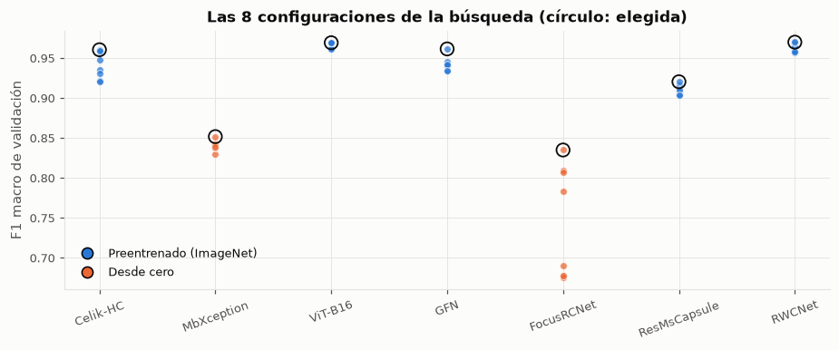

11. Preregistro, protocolo común y fichas de modelo#
En este capítulo documentamos las decisiones fijadas antes de entrenar los siete modelos publicados: el preregistro, el protocolo común, el presupuesto de ajuste igual para todos, las desviaciones de cada implementación respecto a su artículo y el entorno de cómputo. Cerramos con la ficha de registro de cada modelo.
11.1 Preregistro#
El código escribe el preregistro antes de la primera búsqueda de hiperparámetros de cada máquina y no lo sobrescribe:
Portátil:
entregable2/results/common/preregistro_2026-11-14.md, del 14 de noviembre de 2026 a las 20:12. Cubre MbXception, FocusRCNet, ResMsCapsule y RWCNet; su primera búsqueda empezó a las 20:18.Colab:
entregable2/results/common/preregistro_colab_2026-11-15.md, del 15 de noviembre de 2026. Cubre ViT-B16, GFN y Celik-HC, con primera corrida a las 00:54.
Los dos documentos tienen el mismo contenido. La tabla resume cada campo del preregistro y su valor.
Campo |
Declaración |
|---|---|
Tarea y unidad de independencia |
Clasificación de imágenes en 6 clases; grupo de casi-duplicados (capítulo 6) |
Métrica primaria y secundarias |
F1 macro en prueba; las secundarias del capítulo 6 más NLL y Brier |
Margen de relevancia \(\delta\) |
0.02 en F1 macro (capítulo 6) |
Margen de sobreajuste \(\delta_g\) |
0.05 en F1 macro, el valor de referencia para este margen; se usa en el análisis exploratorio del capítulo 14 |
Familia de comparaciones confirmatorias |
Los 45 pares entre los diez modelos, con Holm; dentro de ella, los 7 contrastes de cada modelo publicado frente a ResNet-18 responden RQ2 |
Pruebas y supuestos |
Friedman con \(p\) por permutación; t pareada y Wilcoxon con Holm; normalidad de las diferencias con Shapiro-Wilk (sección 11.2) |
Número de ejecuciones \(R\) |
8 semillas (0 a 7), el \(R_{\text{final}}\) del análisis de potencia del capítulo 4 |
Reglas de exclusión |
Toda corrida completada se incluye. Ninguna corrida divergió ni produjo NaN: las 80 corridas finales entran en el análisis |
Reglas de parada del ajuste |
8 configuraciones por modelo, 30 épocas, paciencia de 12; corridas finales de hasta 60 épocas con la misma paciencia |
Espacio de arquitectura |
No aplica: los siete artículos definen la arquitectura |
Análisis exploratorios |
Todo análisis fuera de la lista del preregistro: ablaciones, conformal, DeLong, TOST, ROPE, estabilidad de Grad-CAM, techo de desempeño y eficiencia |
Congelamiento de datos |
Partición v2 y huella SHA-256 del conjunto de prueba, verificadas antes de cada corrida |
Versionado. Los dos archivos de preregistro se versionan en este repositorio junto con el código. Su fecha y hora de creación quedan registradas en el propio archivo y en los registros de ejecución con marca de tiempo (entregable2/results/logs/), que muestran que el preregistro precede a la primera corrida de cada máquina.
print(open(RES / "common" / "preregistro_2026-11-14.md", encoding="utf-8").read()[:2200])
# Preregistro del benchmark del Entregable 2
Fecha: 2026-11-14 20:12. Se escribe antes de la búsqueda de hiperparámetros y de las corridas definitivas.
## Elementos heredados del Entregable 1 (sin cambios)
- Métrica primaria: F1 macro en prueba. alpha = 0.05, delta = 0.02, potencia objetivo = 0.8.
- Unidad de réplica: la semilla. Semillas [0, 1, 2, 3, 4, 5, 6, 7] (R = 8, el R_final del Entregable 1), compartidas por todos los modelos.
- Partición v2 (`trashnet_split_v2_s1234.csv`, 1800/360/361), huella del test verificada antes de cada corrida.
- Entrada 224x224 por redimensionado directo, aumentación solo en train: {'RandomResizedCrop': {'size': 224, 'scale': (0.7, 1.0)}, 'RandomHorizontalFlip': {'p': 0.5}, 'RandomVerticalFlip': {'p': 0.5}, 'RandomRotation': {'degrees': 15}, 'ColorJitter': {'brightness': 0.2, 'contrast': 0.2, 'saturation': 0.2, 'hue': 0.02}}.
- Entropía cruzada ponderada por la inversa de la frecuencia de clase (o la pérdida propia del modelo con los mismos pesos).
## Modelos
| modelo | familia | preentrenado | lr base | normalización | pérdida | arquitectura definida |
|---|---|---|---|---|---|---|
| Celik-HC | Híbrido DL + ML (fusión multinivel de CNN + XGBoost) | sí | 0.0003 | imagenet | ce + XGBoost | sí (código oficial) |
| MbXception | CNN multirrama (Xception modificada) | no | 0.001 | train | ce | sí (código oficial) |
| ViT-B16 | Transformer (ViT con ajuste fino) | sí | 0.0001 | imagenet | ce | parcial (ViT estándar; variante no declarada, se asume B/16) |
| GFN | Híbrido CNN-Transformer con atención (ResNet50 + PPM + CBAM + ViT) | sí | 0.0001 | imagenet | ce | sí (dimensiones de cada etapa en el texto) |
| FocusRCNet | CNN ligera con atención y destilación de conocimiento | no | 0.001 | imagenet | kd | sí (Tabla 1) |
| ResMsCapsule | Red de cápsulas con extractor residual | sí | 0.0003 | imagenet | margin | parcial (estructura y dimensiones de cápsulas) |
| RWCNet | Fusión de CNN preentrenadas con salidas auxiliares | sí | 0.0003 | imagenet | aux | sí (puntos de fusión y pérdida auxiliar) |
Normalización: estadísticos de ImageNet para los modelos con pesos preentrenados (exigido por los pesos) y media y DE de train para los entren
11.2 Aclaración de la regla de decisión por pares#
El preregistro define una diferencia como relevante si \(|\bar D| \geq \delta\) y su \(p\) corregido por Holm es menor que \(\alpha\). Lista la t pareada y la prueba de Wilcoxon, pero no fija cuál decide. El código usaba inicialmente Wilcoxon. Con \(n = 8\) semillas, el menor \(p\) bilateral exacto de Wilcoxon es
y Holm multiplica el menor \(p\) de la familia por el número de comparaciones, 45. El menor \(p\) ajustado posible es \(45 \times 0.0078 = 0.35\), de modo que con Wilcoxon ninguna diferencia podía resultar significativa, cualquiera que fuera su magnitud. Antes de ver el resultado de las comparaciones fijamos la t pareada con Holm como prueba de decisión, porque las diferencias pareadas no se apartan de la normalidad (Shapiro-Wilk, capítulo 13). Wilcoxon, el bootstrap y Conover se reportan como análisis de sensibilidad (sección 13.8).
11.3 Protocolo común#
Elemento |
Decisión |
|---|---|
Entrada |
224×224 por redimensionamiento directo; misma caché de imágenes para los diez modelos |
Normalización |
Estadísticas de ImageNet para los modelos con pesos preentrenados; media y desviación estándar de entrenamiento para los entrenados desde cero. FocusRCNet usa las de ImageNet porque su profesor es preentrenado |
Aumento de datos |
El del capítulo 6, solo en entrenamiento |
Pérdida |
Entropía cruzada ponderada por clase; las pérdidas propias (destilación, margen, auxiliares) usan los mismos pesos |
Optimización |
AdamW, 3 épocas de calentamiento lineal y coseno hasta 1 % de la tasa, recorte del gradiente en 5, precisión mixta, lote efectivo de 32 |
Tasa base según el régimen |
1e-3 desde cero, 3e-4 para ajuste fino de CNN y 1e-4 para Transformers; la malla multiplica por {1, 0.3} |
Duración |
Máximo 60 épocas; parada temprana con paciencia de 12 sobre el F1 macro de validación |
Selección |
Época con mayor F1 macro de validación; el conjunto de prueba se evalúa una sola vez por corrida |
Reentrenamiento final |
No: los modelos finales se entrenan solo con el conjunto de entrenamiento, igual para todos |
Posprocesamiento |
Escalado de temperatura ajustado en validación; Celik-HC clasifica con XGBoost ajustado en los embeddings de entrenamiento |
Inferencia |
Sin test-time augmentation en ningún modelo |
Pérdidas propias:
FocusRCNet: destilación con \(T = 4\) y \(\alpha = 0.7\) desde un profesor EfficientNet-B4, entrenado una vez con la partición de entrenamiento y seleccionado en validación.
ResMsCapsule: pérdida de margen.
RWCNet: pérdidas auxiliares con pesos 1, 0.5 y 0.25.
11.4 Igual presupuesto de ajuste#
Los siete modelos recorrieron la misma malla de 8 configuraciones con la misma semilla (100), el mismo máximo de épocas, el mismo conjunto de validación y el mismo criterio de parada. La tasa de aprendizaje se define relativa a la tasa base de cada régimen para que la amplitud relativa del espacio sea igual. Los tres modelos base conservan el protocolo del capítulo 4: la misma malla, pero con 50 épocas en la búsqueda y hasta 100 en las corridas finales, con paciencia de 15. Su presupuesto de épocas es mayor, no menor, que el de los modelos publicados, por lo que la diferencia no favorece a los nuevos.
hp = pd.read_csv(RES / "summary" / "busqueda_hiperparametros.csv")
sel = hp.loc[hp.groupby("model").val_f1_macro.idxmax()].set_index("model")
rng = hp.groupby("model").val_f1_macro.agg(["min", "max"])
borde = []
for m in sel.index:
r = sel.loc[m]
b = []
if r.weight_decay == hp[hp.model == m].weight_decay.max(): b.append("weight decay máx.")
if r.dropout == hp[hp.model == m].dropout.max(): b.append("dropout máx.")
if r.lr == hp[hp.model == m].lr.max(): b.append("lr máx.")
borde.append(", ".join(b) or "interior")
tab = pd.DataFrame({"configuración elegida": sel.trial.astype(int), "lr": sel.lr, "weight decay": sel.weight_decay,
"dropout": sel.dropout, "F1 val elegido": sel.val_f1_macro, "F1 val mín.": rng["min"],
"F1 val máx.": rng["max"], "posición en la malla": borde,
"horas de búsqueda": hp.groupby("model").train_time_s.sum() / 3600}).loc[E2_MODELS]
display(tab.round(4))
| configuración elegida | lr | weight decay | dropout | F1 val elegido | F1 val mín. | F1 val máx. | posición en la malla | horas de búsqueda | |
|---|---|---|---|---|---|---|---|---|---|
| model | |||||||||
| Celik-HC | 2 | 0.0003 | 0.0005 | 0.2 | 0.9604 | 0.9209 | 0.9604 | weight decay máx., lr máx. | 0.5681 |
| MbXception | 7 | 0.0003 | 0.0005 | 0.4 | 0.8517 | 0.8299 | 0.8517 | weight decay máx., dropout máx. | 0.7087 |
| ViT-B16 | 5 | 0.0000 | 0.0001 | 0.4 | 0.9691 | 0.9616 | 0.9691 | dropout máx. | 0.3576 |
| GFN | 2 | 0.0001 | 0.0005 | 0.2 | 0.9614 | 0.9340 | 0.9614 | weight decay máx., lr máx. | 0.4785 |
| FocusRCNet | 3 | 0.0010 | 0.0005 | 0.4 | 0.8349 | 0.6753 | 0.8349 | weight decay máx., dropout máx., lr máx. | 0.6079 |
| ResMsCapsule | 2 | 0.0003 | 0.0005 | 0.2 | 0.9203 | 0.9036 | 0.9203 | weight decay máx., lr máx. | 0.6601 |
| RWCNet | 6 | 0.0001 | 0.0005 | 0.2 | 0.9698 | 0.9563 | 0.9698 | weight decay máx. | 1.3966 |
Seis de los siete modelos eligen el weight decay mayor de la malla (5e-4), tres el dropout mayor (0.4) y cuatro el factor de tasa de aprendizaje mayor (1.0). La tabla de importancia de los hiperparámetros, más abajo, muestra que esa posición en el borde tiene poco efecto en el weight decay y el dropout. El rango del F1 de validación entre configuraciones es estrecho en los preentrenados (≤ 0.04) y amplio en FocusRCNet (0.16), el modelo más sensible a la tasa de aprendizaje.
fig, ax = plt.subplots(figsize=(8.5, 3.6))
for i, m in enumerate(E2_MODELS):
v = hp[hp.model == m].val_f1_macro.to_numpy()
ax.scatter(np.full(len(v), i), v, s=26, color=FG.color_regimen(m), alpha=0.75, edgecolor=FG.SURFACE, lw=0.6, zorder=3)
ax.scatter(i, sel.loc[m, "val_f1_macro"], s=90, facecolor="none", edgecolor=FG.INK, lw=1.2, zorder=4)
ax.set_xticks(range(len(E2_MODELS)), E2_MODELS, rotation=20)
ax.set_ylabel("F1 macro de validación"); ax.set_title("Las 8 configuraciones de la búsqueda (círculo: elegida)")
FG.leyenda_regimen(ax, loc="lower left"); plt.tight_layout(); plt.show()

Importancia de los hiperparámetros. Para cada modelo y cada hiperparámetro, la tabla da el cambio medio del F1 de validación al pasar del valor menor al mayor de la malla, promediando sobre las otras dos dimensiones (4 configuraciones por nivel). Un valor positivo indica que el valor mayor favorece al modelo.
efectos = []
for m in E2_MODELS:
h = hp[hp.model == m]
fila = {"modelo": m}
for c, nom in [("lr", "tasa de aprendizaje"), ("weight_decay", "weight decay"), ("dropout", "dropout")]:
lo, hi = sorted(h[c].unique())[0], sorted(h[c].unique())[-1]
fila[nom] = h[h[c] == hi].val_f1_macro.mean() - h[h[c] == lo].val_f1_macro.mean()
efectos.append(fila)
efectos = pd.DataFrame(efectos).set_index("modelo")
efectos["más influyente"] = efectos.abs().idxmax(axis=1)
display(efectos.round(4))
| tasa de aprendizaje | weight decay | dropout | más influyente | |
|---|---|---|---|---|
| modelo | ||||
| Celik-HC | 0.0291 | 0.0089 | 0.0005 | tasa de aprendizaje |
| MbXception | -0.0052 | 0.0004 | 0.0008 | tasa de aprendizaje |
| ViT-B16 | -0.0067 | -0.0002 | 0.0001 | tasa de aprendizaje |
| GFN | 0.0092 | 0.0043 | -0.0067 | tasa de aprendizaje |
| FocusRCNet | 0.1285 | 0.0090 | 0.0112 | tasa de aprendizaje |
| ResMsCapsule | 0.0051 | 0.0015 | -0.0034 | tasa de aprendizaje |
| RWCNet | -0.0045 | -0.0045 | -0.0015 | weight decay |
La tasa de aprendizaje es el hiperparámetro más influyente en los siete modelos (en RWCNet, empatada con el weight decay). Fuera de ella, ningún hiperparámetro cambia el F1 de validación medio en más de 0.011, menos que \(\delta\). Por eso, que seis modelos elijan el weight decay del borde de la malla no indica que el óptimo quede lejos de ella. La excepción es FocusRCNet: pasar de la tasa menor a la mayor sube su F1 de validación en 0.13, y la elegida es la mayor de la malla. Para este modelo, ampliar la malla en tasa de aprendizaje es la extensión con más potencial.
11.5 Desviaciones respecto a los artículos#
Cada implementación registra sus desviaciones en model_info.pkl. Se deben a tres motivos: el protocolo común (entrada de 224×224, AdamW, dropout para el espacio de búsqueda), detalles que los artículos no declaran (variante de ViT, temperatura de destilación, núcleos de las cápsulas) y la corrección de la selección de época con el conjunto de prueba en Celik-HC.
tm = pd.read_csv(RES / "summary" / "tabla_modelos.csv").set_index("model").loc[E2_MODELS]
display(tm[["defines_architecture", "pretrained", "normalization", "loss", "deviations"]]
.rename(columns={"defines_architecture": "arquitectura definida", "pretrained": "preentrenado",
"normalization": "normalización", "loss": "pérdida", "deviations": "desviaciones"}))
| arquitectura definida | preentrenado | normalización | pérdida | desviaciones | |
|---|---|---|---|---|---|
| model | |||||
| Celik-HC | sí (código oficial) | True | imagenet | ce | PyTorch en lugar de Keras con pesos ImageNet de torchvision, Dropout antes de la prime... |
| MbXception | sí (código oficial) | False | train | ce | Entrada 224x224 en lugar de 229x229, AdamW en lugar de SGD con momento, Dropout antes ... |
| ViT-B16 | parcial (ViT estándar; variante no declarada, se asume B/16) | True | imagenet | ce | Variante ViT-B/16 asumida, Lote 32 en lugar de 512 |
| GFN | sí (dimensiones de cada etapa en el texto) | True | imagenet | ce | Proyección 2048x7x7 -> 1000x4x4 mediante conv 1x1 y pooling adaptativo (el texto no la... |
| FocusRCNet | sí (Tabla 1) | False | imagenet | kd | Entrada 224x224 en lugar de 380x380, T = 4.0 y alpha = 0.7 (no declarados), Factor de ... |
| ResMsCapsule | parcial (estructura y dimensiones de cápsulas) | True | imagenet | margin | ResNet-18 hasta layer3 con pesos ImageNet, 32 tipos de cápsula por rama y núcleos 5/3/... |
| RWCNet | sí (puntos de fusión y pérdida auxiliar) | True | imagenet | aux | Rama auxiliar con pooling adaptativo a 5x5 para unificar resoluciones |
11.6 Entorno, determinismo y registro#
Las corridas se repartieron entre dos máquinas, con el mismo código, la misma caché de datos y las mismas semillas:
Componente |
Hardware |
Software |
|---|---|---|
ViT-B16, GFN, Celik-HC; réplica del paper guía |
Colab Pro, NVIDIA A100-SXM4 (80 GB y 40 GB) |
Python 3.13.16, PyTorch 2.14.1+cu130, CUDA 13.0 |
MbXception, FocusRCNet (y su profesor), ResMsCapsule, RWCNet; ablaciones |
Portátil, NVIDIA RTX 4060 Laptop (8 GB), Ryzen 7 8845HS, 31 GB de RAM, Windows 11 |
Python 3.12.10, PyTorch 2.14.1+cu130, CUDA 13.0 |
CNN, MobileNetV2, ResNet-18 (capítulo 4) |
Mismo portátil |
Entorno del capítulo 4 ( |
Determinismo. Cada corrida fija las semillas de Python, NumPy y PyTorch. Activa cudnn.deterministic, desactiva cudnn.benchmark y activa torch.use_deterministic_algorithms en modo de advertencia con CUBLAS_WORKSPACE_CONFIG=:4096:8. El orden de los lotes y el aumento dependen solo de la semilla y de la época. Como evidencia, el reentrenamiento de las 8 semillas de ViT-B16 en otra sesión de Colab (sección 15.2) reprodujo la misma mejor época, el mismo F1 y el 100 % de las predicciones de prueba. Entre máquinas distintas (A100 y RTX 4060) no esperamos identidad bit a bit.
Registro de experimentos. No usamos MLflow ni Weights & Biases. Cada corrida guarda en su carpeta:
la configuración (
config.json, con la versión del código);el entorno (
env.pkl);la historia por época;
las predicciones de validación y prueba;
las métricas, los tiempos, la información del modelo y un archivo
DONEal terminar.
Los registros de ejecución con marca de tiempo están en entregable2/results/logs/. Las versiones exactas de las dependencias están en entregable2/results/common/requirements-lock.txt.
env = pd.DataFrame([{**{k: v for k, v in load_pickle(run_dir(m, 0) / "env.pkl").items() if k in
("gpu", "python", "torch", "cuda", "driver", "platform")},
"modelo": m, "versión del código": json.load(open(run_dir(m, 0) / "config.json")).get("code_version")}
for m in E2_MODELS])
display(env.set_index("modelo"))
vit = pd.DataFrame([json.load(open(run_dir("ViT-B16", s) / "gradcam_origen.json")) for s in SEEDS])
display(vit[["semilla", "mejor_epoca_original", "mejor_epoca_reentrenado", "concordancia_predicciones_prueba",
"f1_macro_prueba_original", "f1_macro_prueba_reentrenado"]])
| python | torch | cuda | gpu | driver | platform | versión del código | |
|---|---|---|---|---|---|---|---|
| modelo | |||||||
| Celik-HC | 3.13.16 | 2.14.1+cu130 | 13.0 | NVIDIA A100-SXM4-80GB | 580.82.07 | colab | 77354957acdb |
| MbXception | 3.12.10 | 2.14.1+cu130 | 13.0 | NVIDIA GeForce RTX 4060 Laptop GPU | 592.82 | local | 77354957acdb |
| ViT-B16 | 3.13.16 | 2.14.1+cu130 | 13.0 | NVIDIA A100-SXM4-80GB | 580.82.07 | colab | 77354957acdb |
| GFN | 3.13.16 | 2.14.1+cu130 | 13.0 | NVIDIA A100-SXM4-80GB | 580.82.07 | colab | 77354957acdb |
| FocusRCNet | 3.12.10 | 2.14.1+cu130 | 13.0 | NVIDIA GeForce RTX 4060 Laptop GPU | 592.82 | local | 77354957acdb |
| ResMsCapsule | 3.12.10 | 2.14.1+cu130 | 13.0 | NVIDIA GeForce RTX 4060 Laptop GPU | 592.82 | local | 77354957acdb |
| RWCNet | 3.12.10 | 2.14.1+cu130 | 13.0 | NVIDIA GeForce RTX 4060 Laptop GPU | 592.82 | local | 77354957acdb |
| semilla | mejor_epoca_original | mejor_epoca_reentrenado | concordancia_predicciones_prueba | f1_macro_prueba_original | f1_macro_prueba_reentrenado | |
|---|---|---|---|---|---|---|
| 0 | 0 | 43 | 43 | 1.0 | 0.938753 | 0.938753 |
| 1 | 1 | 12 | 12 | 1.0 | 0.919271 | 0.919271 |
| 2 | 2 | 33 | 33 | 1.0 | 0.932752 | 0.932752 |
| 3 | 3 | 11 | 11 | 1.0 | 0.946453 | 0.946453 |
| 4 | 4 | 24 | 24 | 1.0 | 0.928985 | 0.928985 |
| 5 | 5 | 15 | 15 | 1.0 | 0.941116 | 0.941116 |
| 6 | 6 | 43 | 43 | 1.0 | 0.964849 | 0.964849 |
| 7 | 7 | 8 | 8 | 1.0 | 0.930085 | 0.930085 |
11.7 Fichas de modelo#
rows = []
for m in E2_MODELS:
info = load_pickle(run_dir(m, 0) / "model_info.pkl")
tim = [load_pickle(run_dir(m, s) / "timing.pkl") for s in SEEDS]
hist = [load_pickle(run_dir(m, s) / "history.pkl") for s in SEEDS]
cfg = json.load(open(run_dir(m, 0) / "config.json"))
rows.append({
"modelo": m, "DOI": info.get("doi"), "preentrenamiento": "ImageNet-1k (torchvision)" if info.get("pretrained") else "ninguno",
"parámetros (M)": info["params_total"] / 1e6, "GFLOPs por imagen": info.get("gflops"),
"configuración (lr / wd / dropout)": f"{sel.loc[m, 'lr']:.1e} / {sel.loc[m, 'weight_decay']:.0e} / {sel.loc[m, 'dropout']}",
"épocas efectivas (media)": np.mean([t["epochs_run"] for t in tim]),
"mejor época (media)": np.mean([t["best_epoch"] for t in tim]),
"minutos por corrida": np.mean([t["train_time_s"] for t in tim]) / 60,
"latencia ms/imagen (lote)": np.mean([t["inference"]["ms_per_image_mean"] for t in tim]),
"latencia lote 1 (ms)": np.mean([t["inference"]["latency_bs1_ms_mean"] for t in tim]),
"rendimiento (imágenes/s, lote 32)": 1000 / np.mean([t["inference"]["ms_per_image_mean"] for t in tim]),
"memoria pico (MB)": np.mean([max(h["gpu_mem_max_MB"]) for h in hist]),
"GPU": load_pickle(run_dir(m, 0) / "env.pkl")["gpu"].replace("NVIDIA ", ""),
})
fichas = pd.DataFrame(rows).set_index("modelo")
display(fichas.round(2).T)
| modelo | Celik-HC | MbXception | ViT-B16 | GFN | FocusRCNet | ResMsCapsule | RWCNet |
|---|---|---|---|---|---|---|---|
| DOI | 10.1007/s00371-025-04031-3 | 10.1109/ACCESS.2020.3016116 | 10.3390/su132111572 | 10.3390/electronics14010075 | 10.1186/s42492-023-00146-3 | 10.1007/s11356-023-27970-7 | 10.1109/ACCESS.2024.3354774 |
| preentrenamiento | ImageNet-1k (torchvision) | ninguno | ImageNet-1k (torchvision) | ImageNet-1k (torchvision) | ninguno | ImageNet-1k (torchvision) | ImageNet-1k (torchvision) |
| parámetros (M) | 28.42 | 28.39 | 85.8 | 113.67 | 0.52 | 4.22 | 25.6 |
| GFLOPs por imagen | 6.45 | 12.39 | 35.13 | 11.35 | 0.25 | 2.84 | 9.18 |
| configuración (lr / wd / dropout) | 3.0e-04 / 5e-04 / 0.2 | 3.0e-04 / 5e-04 / 0.4 | 3.0e-05 / 1e-04 / 0.4 | 1.0e-04 / 5e-04 / 0.2 | 1.0e-03 / 5e-04 / 0.4 | 3.0e-04 / 5e-04 / 0.2 | 9.0e-05 / 5e-04 / 0.2 |
| épocas efectivas (media) | 42.0 | 57.62 | 36.62 | 40.75 | 60.0 | 44.5 | 33.0 |
| mejor época (media) | 30.25 | 50.62 | 23.62 | 29.25 | 51.38 | 31.62 | 20.0 |
| minutos por corrida | 6.15 | 10.17 | 3.47 | 5.01 | 9.22 | 5.33 | 12.34 |
| latencia ms/imagen (lote) | 1.12 | 1.42 | 0.46 | 0.97 | 0.37 | 0.4 | 2.28 |
| latencia lote 1 (ms) | 34.97 | 10.83 | 11.93 | 29.59 | 9.45 | 5.6 | 56.49 |
| rendimiento (imágenes/s, lote 32) | 892.78 | 705.17 | 2180.27 | 1034.41 | 2717.5 | 2470.41 | 438.02 |
| memoria pico (MB) | 2684.73 | 2843.49 | 3362.17 | 3200.23 | 1343.79 | 830.76 | 4866.08 |
| GPU | A100-SXM4-80GB | GeForce RTX 4060 Laptop GPU | A100-SXM4-80GB | A100-SXM4-80GB | GeForce RTX 4060 Laptop GPU | GeForce RTX 4060 Laptop GPU | GeForce RTX 4060 Laptop GPU |
Incidencias. Ninguna corrida divergió ni se descartó.
ViT-B16: el Grad-CAM de la corrida original salió en ceros, porque la capa elegida no recibe gradiente en los tokens de los parches. Se cambió la capa y se reentrenaron las 8 semillas con la misma configuración para regenerarlo, con predicciones idénticas (tabla de la sección 11.6).
Colab: se quedó sin unidades de cómputo antes de la ablación, que se ejecutó en el portátil con la misma versión del código.
Tiempos, latencia y memoria. La ficha reporta, para cada modelo, los minutos por corrida, la latencia por imagen en lote de 32 y con lote de 1, y la memoria pico de entrenamiento, medidos en la GPU donde se entrenó. Comparamos los tiempos entre modelos de una misma GPU, porque la A100 y la RTX 4060 tienen capacidades distintas:
RTX 4060:
Inferencia: FocusRCNet (0.37 ms por imagen) y ResMsCapsule (0.40 ms) son los más rápidos. RWCNet es el más lento (2.28 ms en lote y 56 ms con lote de 1).
Entrenamiento: RWCNet es también el que más tarda por corrida (12.3 min) y el que más memoria usa (4.9 GB).
Memoria: ResMsCapsule entrena con 0.8 GB, la menor de los siete modelos.
A100:
Inferencia: ViT-B16 es el más rápido en lote (0.46 ms por imagen), pese a tener el mayor número de operaciones, porque su cálculo se reduce a multiplicaciones de matrices grandes que la A100 paraleliza bien. Celik-HC, con dos extractores en serie y la etapa de XGBoost, es el más lento (1.12 ms en lote y 35 ms con lote de 1).
Entrenamiento: ViT-B16 también entrena en el menor tiempo por corrida (3.5 min).
La relación entre latencia y F1 se analiza en la frontera de Pareto (sección 13.11), y el consumo de energía de todas las corridas en la sección 13.12.